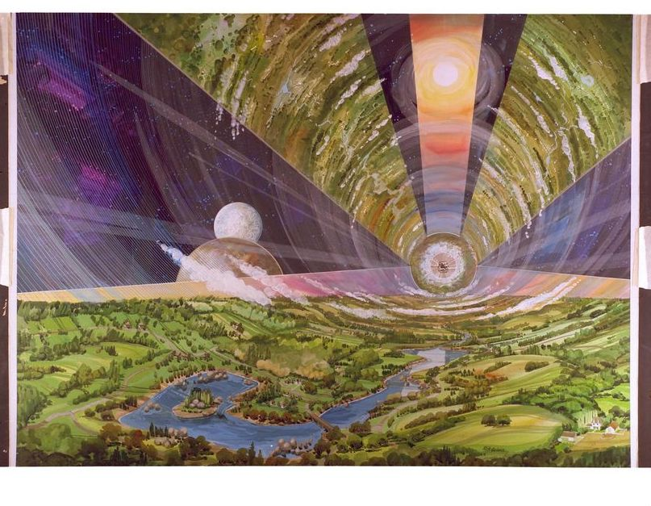

Field Survey
Light mode only, in the team palette. Hover, press and focus every control on this page: what you feel here is the standard for the app.
Colour
The five team colours, plus ink and status. Light hues are fills; text uses their darker -ink steps.
Type
One family for the interface. Serif italic only for people's words and species names.
Regional gridded weather for the cell around the field, not a reading taken in the field.
“It yellowed from the edges in May, before the heat came.”
Buttons
Hover lifts 1px with a soft shadow and nudges the arrow; press sinks to 98%. One yellow-green button per view.
Fields
Label above, unit inside, hint below. Errors appear on blur or submit and say how to fix.
Evidence legend
Symbol, label and colour together, never colour alone.
- ObservedOBSERVED
- Farmer reportedFARMER_REPORTED
- Reviewed literatureLITERATURE_REVIEWED
- HypothesisHYPOTHESIS
- Model scenarioMODEL_SCENARIO
- IllustrativeILLUSTRATIVE
- Missing dataMISSING_DATA
States
Every panel that loads data has these. A failed request shows no numbers.
41.6, −0.9 · 2022 and 2010–2021.
No values are shown. Try again in a minute; your inputs are kept.
Rain has no data for September. The gap is marked.
Refresh to check for newer records.
Case sharing (F-09) will live here.
With sources and limitations.
Motion
Exponential ease-out. Motion answers a person's action; nothing loops for decoration. Reduced motion sets every duration to 0.
| Interaction | What moves | Token | Try |
|---|---|---|---|
| Hover a button | colour, lift −1px, soft shadow, arrow +3px | --dur-1 / --dur-2 | |
| Press | scale .98, shadow off | --dur-press | press any button |
| Hover a linked block | lift −2px, shadow | --dur-2 | Hover me |
| Hover an image link | image scale 1.03 inside its frame | --dur-3 |  |
| Tabs | indicator slides to the selected tab | --dur-2 | see the landing page |
| Disclosure, menu, drawer | height via grid rows, opacity, translate | --dur-3 | see the landing page |
| Toast | rises 8px and fades in, auto-closes after 6 s, pauses on hover | --dur-2 | |
| Data arrives | chart bars grow from the zero line, 30 ms stagger, only after a user action | --dur-4 | see the example case |
| Loading | spinner inside the button; label ends with “…” | linear .8s | button above |